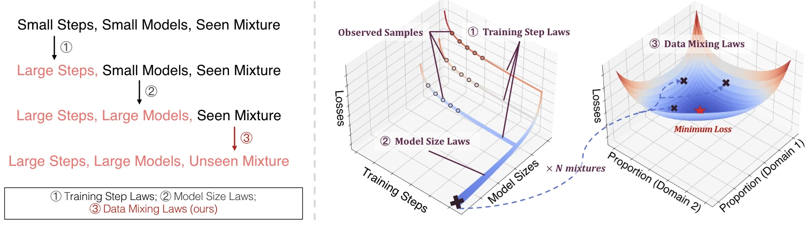
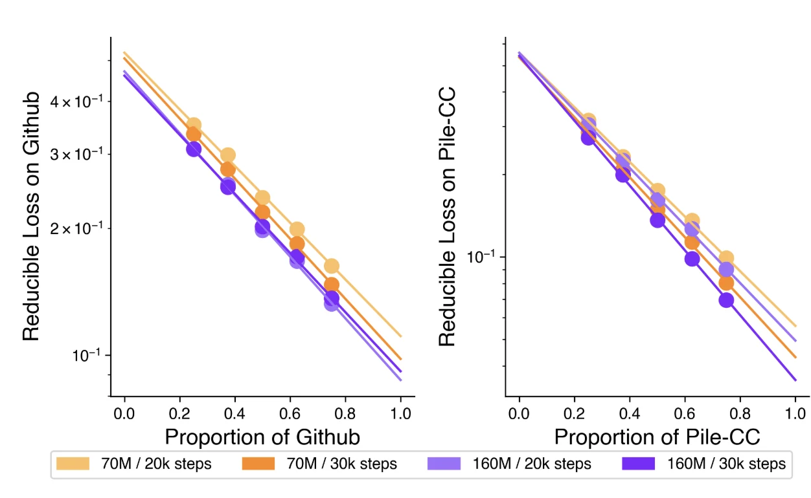
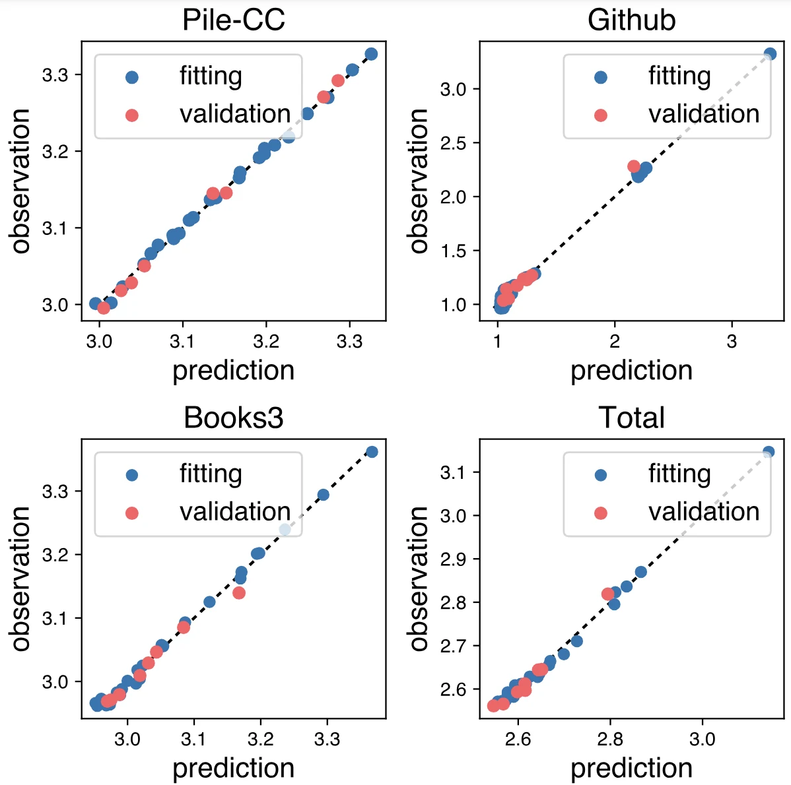
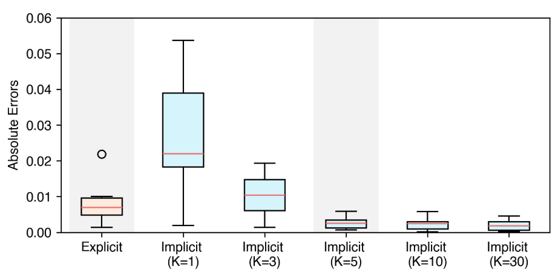
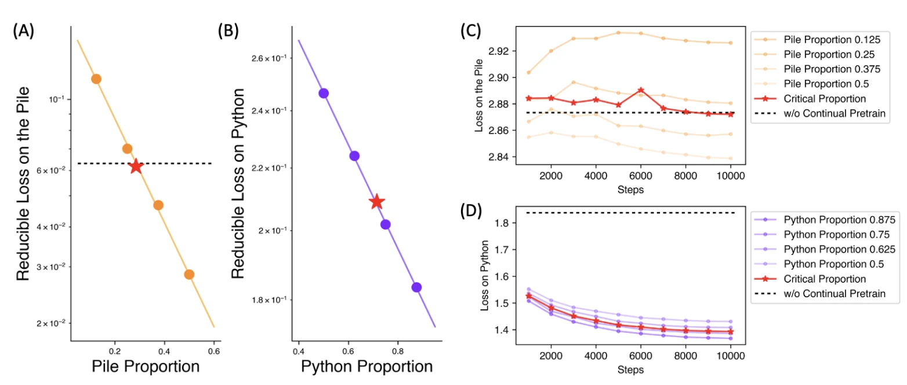

引言
预训练数据包含多个数据来源，组成不同领域（如网络、论文、代码、多模态等等），数据之间存在相互促进、冲突、或无关等复杂关系
另一方面，在大语言模型的进展中，以规模定律（Scaling Laws
更进一步地，结合规模定律的思想，要想优化大模型的数据配比，我们可以在小模型上实验，利用规模定律预测对应数据大模型的表现，并利用预测值建立大模型的数据混合定律。 我们将这一流程总结如图1所示

本工作通过实验发现并验证了数据混合定律以及上述数据配比优化流程的构想。 实验表明，在使用100B tokens的RedPajama数据预训练1B模型场景下，上述流程优化后的配比得到了原配比需要48%额外训练步数才达到的表现。 在继续预训练的场景下，使用数据混合定律可以找到避免灾难性遗忘的临界数据配比，在该配比下既能避免模型原始能力损失，又能最快地引入新能力。
定量预测数据配比对模型表现的影响
要找到数据混合定律的形式，我们面临着两个挑战，这些挑战源于其函数性质的复杂：
- 多变量：对于涉及K个领域的混合规律，我们应该考虑混合比例中的K-1个自由度。变量的增加大大扩大了潜在函数的范围，从而使函数形式的识别变得更加复杂。
- 非单调性：模型损失通常会随着因素的缩放而单调递减。然而，对于混合比例，任何领域的损失与比例之间的单调关系表明，一个不平衡的混合可以在不努力平衡领域比例的情况下实现最小损失，这与实践相矛盾。因此，与现有的缩放规律相反，这些规律表明损失随着相关因素的缩放单调递减，我们研究的混合规律应适应任何领域的非单调函数。这种非单调性为我们的分析增加了另一层复杂性。
两训练领域、单验证领域
图2显示了两训练领域的情况下，使用不同数据配比对应模型在两个领域损失的可定量预测性。

其中L_i为领域i上的损失函数，r_i为领域i的数据配比，c_i,k_i,t_{ii}为待拟合参数。
多训练领域，单验证领域
为了适应主要包含两个以上领域的真实预训练数据，我们将我们的研究扩展到多个领域。为了简化和方便可视化，我们从三个领域的情况开始。我们采取假设验证的方式探索多个训练domain下混合定律的函数形式，我们基于以下两个原则提出将可能的形式：
- 兼容性：训练领域的数量M = 2时，函数形式应当可以简化为上一节中的形式。
- 对称性：任何变量的交换不应改变函数形式。
经过实验，我们发现
能准确地拟合并预测各实验数据配比下的各损失函数值。 其中L_i为领域i上的损失函数，r_j为领域j的训练数据配比，c_i,k_i,t_{ii}为待拟合参数。 其拟合结果如图3所示。

多训练领域，多验证领域
我们进一步放宽验证集为单领域的限制。 首先，我们考虑验证集是已知训练领域的组合，再解除这一要求，以适应更广泛的任意验证集情况。 这对应于我们适配数据混合定律的两种策略，具体如下所述。
显式领域集成 考虑一个由K个领域组成的验证集，其中各领域的比例为s_{1\dots K} ，则验证损失可以写成各领域损失的加权和。即
隐式领域集成 上述方式的局限在于我们仍然需要提前获取验证数据的组成比例。 如果验证集与训练集分开收集，则这可能会不便。 例如，验证数据可能来自覆盖各种领域未知组合的真实用户数据，或一部分单独收集的高质量数据代表。 为了消除对验证数据来源的限制，我们假设我们可以将验证数据分解为K个隐式领域，其中每个领域的损失可以分别用单验证领域的数据混合定律进行预测。 类似显式领域集成，我们将每个隐式领域的损失按其比例加权求和，但我们将这些隐式领域的比例s_{1\dots K}也视作数据混合定律中待拟合的参数，并端到端地拟合整体损失。
图4展示了一个在5个领域中训练和验证的实验。当设定隐式领域数量不少于实际领域数量（5）时，隐式领域集成可以得到和显式领域集成相当或更好的拟合效果。

嵌套使用规模定律和数据混合定律优化大规模训练的数据配比
尽管数据混合定律使我们能够估计在未知混合上训练的模型的性能，但拟合它需要在多个数据配比上训练许多与目标训练规模相同大小和相同训练量的模型。 此外，对每个目标模型大小和训练数据量，我们必须重新运行实验。 昂贵的成本使得数据混合定律的实际价值受限。 因此，我们想知道是否可以在不进行大规模训练的情况下获得不同混合比例的损失。
这个想法可以被现有规模定律支持，当前关于规模定律的经验验证了他们在训练步骤和模型大小上具有惊艳的外推性。 利用规模定律，我们可以在不同的混合下训练少量训练步骤的小型模型，并在它们上拟合规模定律以估计目标模型大小和训练步骤的损失。 然后，我们使用估计的损失来拟合混合定律并搜索最佳混合。这一流程如图1所示。

我们使用这一流程对在RedPajama上训练100B数据的1B模型进行数据配比优化，以最小其在验证集上的损失函数值，其中对应验证集和训练集分别收集的场景，我们使用Pile验证集进行验证。 结果显示，在优化后的数据配比训练，仅需73%的训练步数即可达到默认配比下完全训练的表现，在优化后数据配比完整训练后，其表现若使用默认配比估计需要48%更多训练步数。
继续预训练
我们进一步尝试在继续预训练中验证并应用数据混合定律。 继续预训练与预训练仅在初始化模型有区别。 通常，人们通过使用新领域数据对模型进行继续预训练以向其注入新领域知识
我们发现数据混合定律在继续预训练中同样适用。如图6所示，变化原始数据和新领域数据的配比对领域损失的影响同样满足指数定律。 我们利用拟合的数据混合定律，找到了恰可以使原始训练领域上损失不上升的临界点，在这一临界点训练避免灾难性遗忘的同时最快优化模型新领域的能力。

总结
在这项工作中，我们探索了训练数据配比对模型损失的可定量预测性，即数据混合定律。 我们的研究涵盖了从两个领域到多个领域的训练数据，以及从单一领域到多个任意领域组合的验证数据。 使用数据混合定律，实践者可以在实际训练之前，定量估计模型在未见过的混合比例上的性能，从而找到理想的数据配比。 我们进一步提出了嵌套使用训练步骤、模型大小的规模刑律和数据混合定律，仅通过小规模实验即可预测大规模训练下不同数据配比得到的模型表现，从而降低计算成本。 实验结果表明，我们的方法有效地优化了数据配比，从而在预训练中带来更好的性能，并在继续预训练中能指导数据配比选择以避免灾难性遗忘。 综上，我们在训练数据的定量研究方法上做出了初步的尝试。随着对数据工程的日益关注，我们希望我们的探索能促进该研究领域进一步的定量研究和理论分析。